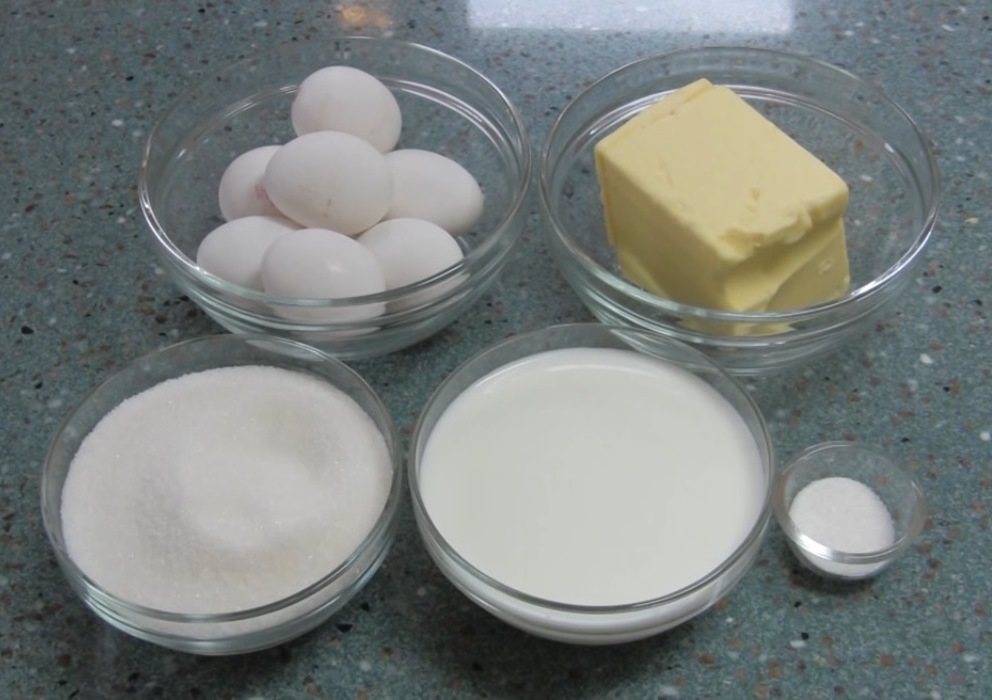

Для приготвления теста необходимо
Отделяем бели от желтков взбиваем до густой пены, добавляем постепенно
сахар и муку.
Корж печем 20 минут при температуре 200C
Необходимые ингредиенты
Для приготовления крема необходимо сбить молоко с яйцом добавить сахар и
постоянно мешая довести до кипения и варить еще 4 минуты.
После остужения сиропа небольшими порциями добавить к взбитому маслу.
Для просмотра видео перейдите по Ссыле